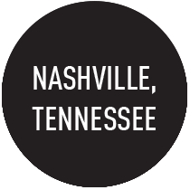

As an outgoing, health care lobbyist turned passionate software developer, my background in policy and project management gave me the analytical thinking and collaboration skills to build dynamic and responsive web applications. My positive demeanor and creative approach to problem solving are reflected in my programming style. Outside of work, I enjoy riding my bike, dancing with my performance squad, and attending coding meetups. Follow me on GitHub.com/smcurrey528 or contact me via email at curreysarah28@gmail.com.
|  | ||||
| Dancer | Foodie | Nashville Native | Cyclist | World Traveler |